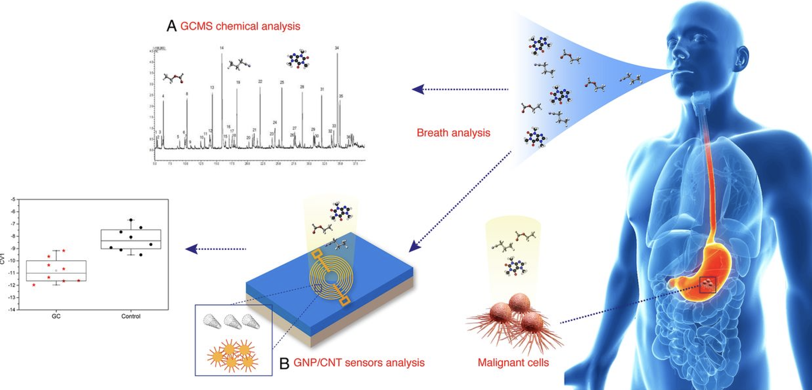

Hyper personalized, rapid-feedback medicine
It seems ridiculous that we have to go to a doctor or lab to get data about our biology. Direct-to-consumer testing kits are now available online, allowing consumers to have a choice in testing for specific conditions or biomarkers. The advent of COVID-19 forever changed the home-testing market for flu-like diseases. We might not want to pay for them out of pocket, but these types of tests are moving into the home. What this consumer approach is missing is the personalization of our results. Sure the presence of a virus is good to know, as is the status of a key biomarker, but for medicine to become truly personalized, we are going to have to close the loop even tighter.
What about the breath? Dogs can be trained to sniff out viruses or cancer. Human breath contains over 1000 compounds that indicate overall health status and our exposure to pollutants or chemicals. It’s hard to think of something easier than breath to collect either at home or a point of care center. While these tests aren’t available on Amazon yet, it does appear that the science is solved and it's now an engineering and big data challenge to sort out. With that in mind, we expect this type of hyper personalization of medicine to be available by the end of the decade, if not sooner.
Our genes, the ones we inherit from our parents and are born with, are our genotype. Right now we don’t have an easy way to edit our genomes but scientists are working on that! So while we can know if we have a certain gene for a trait - we can’t really control or modify that. The key to making medicine personalized is first determining an individual's baseline or phenotype (essentially the expressed components of what makes them unique). Then once you have an intervention (drug, lifestyle etc) it would allow for an inexpensive and rapid method for checking on the direction and progress of a treatment.
Source: The BMJ